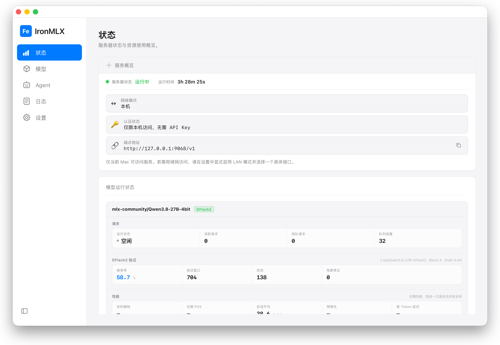

服务 Agent 应用
面向 Agent 应用场景，提供本地模型推理服务。
__RELEASE_BADGE_ZH__
APPLE SILICON 本地推理
在你的 Mac 上私密、原生地运行强大的
开源 AI 模型。
__RC_DOWNLOAD_ZH__

面向 Agent 应用场景，提供本地模型推理服务。
利用 Apple Silicon 原生加速，在 Mac 上高效运行和管理本地模型。
兼容 OpenAI 和 Anthropic API，为 Agent 应用和本地工具提供统一的模型接口。
当前支持
查看支持的模型架构，以及 Mac 的运行要求。